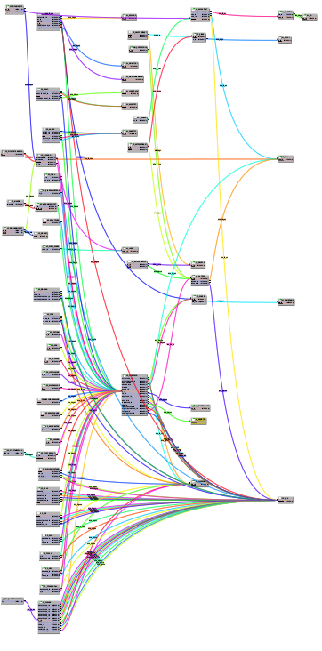

AutoLayout für ModuleWorkspace
Ich wollte schon lange einmal den überfälligen Schritt tun und die ModuleWorkspace-Komponente, auf der unter anderem die sQLshell und dWb+ beruhen um eine Möglichkeit erweitern, die Module und Tabellen automatisch bestmöglich anzuordnen.
Bereits vor einigen Monaten riet mir ein Bekannter während der Beschäftigung mit visuellen Programmierumgebungen zur Modellierung von Informationsflüssen doch einfach Klay aus dem Projekt OpenKieler einzusetzen, damit ich ein solches automatisches Layout nicht selbst programmieren müssten.
Ich begann damals sofort, mich damit zu beschäftigen, scheiterte aber vor allem daran, dass sich die Entwickler inzwischen völlig fanatisch in ein unauflösbaren Vendor Lock-In mit Eclipse verbissen hatten. Prinzipiell hätte man das Auto-Layout zwar mit einem Wrapper umgeben auch in andere Java-Ökosysteme integrieren können - aber aus meiner Sicht hätte man mit einem unverhältnismäßigen Aufwand dafür Eclipse praktisch nachbauen müssen. Das war aber etwas, das für mich von vornherein ausschied (Ich bin kein Freund von Eclipse).
Ich tat mich dann noch ein wenig um - einfach um nicht irgendwann festzustellen, dass es doch eine Open-Source-Komponente gibt, die diese Aufgabe bewältigt, jedoch vollkommen einfach integriert werden kann.
Und doch kam ich immer wieder zurück zu OpenKieler - das Interface, das hier zur Verfügung gestellt wurde war einfach zu 100 Prozent das, was ich brauchte: Man konnte dem Algorithmus die Größe und Position nicht nur der Knoten im Graphen, sondern auch der Ports in den Knoten vor dem Layout auf den Pixel genau spezifizieren und der Algorithmus nahm diese Angaben und berücksichtigte sie beim Layout. Diese Variante kam ModuleWorkspace sehr entgegen: Dort war ja die Anzahl und Positionierung der Ports durch den zu visualisierenden Sachverhalt (JavaBean, Datenbanktabellen, ...) ebenso vorgegeben, wie die Mosition der Module durch den Anwender.
Ich scheiterte aber immer wieder an der Eclipse-Integration und an den (für mich?) unauffindbaren Erfahrungsberichten anderer, die die Integration in etwas nicht aus dem Eclipse-Universum stammendes erfolgreich erledigt hatten.
Eines Tages kam mir plötzlich eine Idee, die in ihrer Einfachheit wiedermal die erstaunte Frage aufkommen ließ, warum ich nicht bereits viel früher dran gedacht hatte: Java hat einen eingebauten Javascript-Interpreter und Klay ist als Javascript-Variante verfügbar. Diese ist hervorragend dokumentiert: der Graph wird in eine JSON-Struktur umgewandelt und an den Layout-Mechanismus gegeben. Dieser wirkt seine Magie und liefert eine transformierte Graphenstruktur ebenfalls als JSON zurück. Diese kann man parsen und die Position der Graphelemente entsprechend der enthaltenen Informationen anpassen.
Das war natürlich zu einfach, um wahr zu sein: die JavaScript-Variante benötigt ein Browser Environment. Java stellt aber lediglich den Interpreter für die Sprache zur Verfügung. Es existieren einige Links im Netz, die auf eine Implementierung eines Browser Environment hindeuten - allerdings scheinen entsprechende Versuche bereits vor Jahren eingeschlafen zu sein und alle Versionen, die ich fand waren nicht ausreichend, um Klay damit zur Mitarbeit zu bewegen.
Als ich bereits dachte, dass ich wieder mal in einer Sackgasse gelandet wäre kam mir ein weiterer Gedanke. Ich berichtete hier bereits davon, wie ich JavaFX-Komponenten in Java-Anwendungen integrierte. Warum nicht einfach den JavaFX-Browser als Browser Environment benutzen? Gesagt - getan ... Und siehe da - es funktionierte; man musste dazu den Browser noch nicht einmal anzeigen. Der Anwender merkt absolut nichts davon: Der Code transformiert das Ausgangsdatenmodell in die benötigte JSON-Struktur und baut diese in eine HTML-Seite ein, die dann dem JavaFX-Browser Envorinment übergeben wird. Dieses führt das automatische Layout als JavaScript-Programm aus und liefert das Ergebnis als String zurück, der das geänderte JSON-Fragment beinhaltet. Dieses wird dann wieder auf Java-Seite analysiert, woraufhin die Position der einzelnen Elemente entsprechend der darin gefundenen Informationen angepasst wird.
Ein erster Versuch fand in der sQLshell mit einem tatsächlich im Produktiveinsatz befindlichen Datenmodell statt - daher kann man auf den Screenshots auch nichts lesen. Angehängt findet man den Screenshot nach dem automatischen Import des Datenmodells, wie ihn die sQLshell anhand der Fremdschlüsselbeziehungen durchführt. Daneben findet man die Anordnung der Tabellen nach dem automatischen Layout. Obwohl hier bisher nur die Positionierungsinformationen für die Tabellen und nicht die für die Fremdschlüsselbeziehungen zu Rate gezogen wurden kann man doch sehen, dass eine Verbesserung erreicht wurde.

Hierarchisches Layouterste mögliche Überschrift!
Tags


Neueste Artikel
-
 One Note Samba Stecey Kent
One Note Samba Stecey Kent
Um ein wenig Abwechslung reinzubringen - etwas lateinamerikanisch angehauchte Musik...
Weiterlesen... -
35c3 - Meine Favoriten zweiter Teil
Schon im ersten Artikel zum 35c3 habe ich einige meiner favorisierten Vorträge des 35c3 vorgestellt...
Weiterlesen... -
35c3 - Meine Favoriten bisher
Wie jedes Jahr habe ich auch diesmal wieder die Vorträge des 35c3 genossen - ich habe nicht alle gesehen, aber das hier ist die Auswahl meiner Favoriten aus denen, die ich gesehen habe:
Weiterlesen...
Manche nennen es Blog, manche Web-Seite - ich schreibe hier hin und wieder über meine Erlebnisse, Rückschläge und Erleuchtungen bei meinen Hobbies.
Wer daran teilhaben und eventuell sogar davon profitieren möchte, muß damit leben, daß ich hin und wieder kleine Ausflüge in Bereiche mache, die nichts mit IT, Administration oder Softwareentwicklung zu tun haben.
Ich wünsche allen Lesern viel Spaß und hin und wieder einen kleinen AHA!-Effekt...
PS: Meine öffentlichen GitHub-Repositories findet man hier.